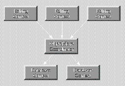

Extends:
next.eo.ObjectStore
For relational databases, Enterprise Objects Framework provides a concrete subclass of CooperatingObjectStore, DatabaseContext. The DatabaseContext class represents a single connection to a database server. DatabaseContext fetches and saves objects on behalf of one or more EditingContexts. However, DatabaseContext and EditingContext don't interact with each other directly-an ObjectStoreCoordinator acts as a mediator between them.

commitChanges()
Overridden by subclasses to commit the transaction. Raises an exception if an error occurs; the error message indicates the nature of the problem.
See also:
performChanges, commitChanges, saveChangesInEditingContext (ObjectStoreCoordinator)
handlesFetchSpecification(next.eo.FetchSpecification fetchSpecification)
Overridden by subclasses to return true if the receiver is responsible for fetching the objects described by fetchSpecification. For example, DatabaseContext determines whether it's responsible based on fetchSpecification's entity name.
See also:
ownsGlobalID, ownsObject
ownsGlobalID(next.eo.GlobalID globalID)
Overridden by subclasses to return true if the receiver is responsible for fetching and saving the object identified by globalID. For example, DatabaseContext determines whether it's responsible based on the entity associated with globalID.
See also:
handlesFetchSpecification, ownsObject
ownsObject(java.lang.Object object)
Overridden by subclasses to return true if the receiver is responsible for fetching and saving object. For example, DatabaseContext determines whether it's responsible based on the entity associated with object.
See also:
ownsGlobalID, handlesFetchSpecification
performChanges()
Overridden by subclasses to transmit changes to the receiver's underlying database. Raises an exception if an error occurs; the error message indicates the nature of the problem.
See also:
commitChanges, rollbackChanges, saveChangesInEditingContext (ObjectStoreCoordinator)
prepareForSaveWithCoordinator(next.eo.ObjectStoreCoordinator coordinator,
next.eo.EditingContext anEditingContext)
Overridden by subclasses to notify the receiver that a multi-store save operation overseen by coordinator is beginning for anEditingContext. For example, the receiver might prepare primary keys for newly inserted objects so that they can be handed out to other CooperatingObjectStores upon request. The receiver should be prepared to receive the messages recordChangesInEditingContext and recordUpdateForObject.
After performing these methods, the receiver should be prepared to receive the possible messages performChanges and then commitChanges or rollbackChanges.
recordChangesInEditingContext()
Overridden by subclasses to instruct the receiver to examine the changed objects in the receiver's EditingContext, record any operations that need to be performed, and notify the receiver's ObjectStoreCoordinator of any changes that need to be forwarded to other CooperatingObjectStores.
See also:
prepareForSaveWithCoordinator, recordUpdateForObject
recordUpdateForObject(java.lang.Object object, next.util.ImmutableHashtable changes)
Overridden by subclasses to communicate from one CooperatingObjectStore to another (through the ObjectStoreCoordinator) that changes need to be made to an object. For example, an insert of an object in a relationship property might require changing a foreign key property in an object owned by another CooperatingObjectStore. This method is primarily used to manipulate relationships.
See also:
prepareForSaveWithCoordinator, recordChangesInEditingContext
rollbackChanges()
Overridden by subclasses to roll back changes to the underlying database. Raises one of several possible exceptions if an error occurs; the error message should indicate the nature of the problem.
See also:
commitChanges, performChanges,
saveChangesInEditingContext (ObjectStoreCoordinator)
valuesForKeys(next.util.ImmutableVector keys,
java.lang.Object object)
Overridden by subclasses to return values (as identified by keys) held by the receiver that augment properties in object. For instance, a DatabaseContext stores foreign keys for the objects it owns (and primary keys for new objects). These foreign and primary keys may well not be defined as properties of the object. Other DatabaseContexts can find out these keys by sending the DatabaseContext that owns the object a valuesForKeys message. Note that you use this for properties that are not stored in the object, so using key-value coding directly on the object won't always work.